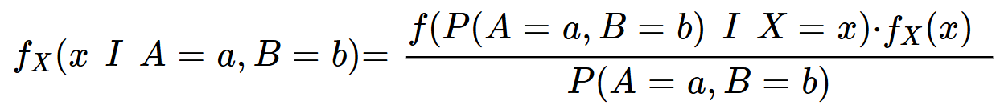

Байес теоремасы
Жалпы бета үлестірімнің шығу негізінде байес теоремасы жатыр, сондықтан байес теоремасының өзіне бөлек көңіл бөлген жөн.
(бірден мысалға көше беруге болады) Байес теоремасы бойынша:  Бұл жердегі | - шарт белгісі. P(A|B) табылуы
арқылы "егер қарастырылып отырған жиынға В сипаттамасы тән болса, оған А сипаттамасының тән болу ықтималдығы қанша?" немесе
"B оқиғасы болып қойса, А оқиғасының болу ықтималдығы қанша?" сұрақтарына жауап беріледі. Яғни В - шартты сипаттама.
Формуланың мағынасын түсіну үшін В-ны белгілі бір элементтер жиынына тән бола алатын сипаттама ретінде қарастыру қажет.
Бұл жердегі | - шарт белгісі. P(A|B) табылуы
арқылы "егер қарастырылып отырған жиынға В сипаттамасы тән болса, оған А сипаттамасының тән болу ықтималдығы қанша?" немесе
"B оқиғасы болып қойса, А оқиғасының болу ықтималдығы қанша?" сұрақтарына жауап беріледі. Яғни В - шартты сипаттама.
Формуланың мағынасын түсіну үшін В-ны белгілі бір элементтер жиынына тән бола алатын сипаттама ретінде қарастыру қажет.
--ықтималдықтар теориясында көбіне өз ықтималдығы бар жиындар қарастырылып (A, B, C; P(A), P(B), P(C)), олардың бәрін біріктіретін
жиын Ω болып белгіленеді. Оның құрамына бос жиын да кіреді.--

Мысал
Мысал ретінде сырт киім өндіретін мекемедегі теріден жасалған және пальто болып табылатын киімдерді алайық. Бізге жылына қолданылатын
терінің қанша пайызы пальтоларға жұмсалатынын табу қажет, яғни, математикалық тұрғыдан, жылына орта есеппен өндірілген киімдердің ішінен
кездейсоқ киімді таңдағанда, ол теріден жасалған болып шықса, оның пальто болып шығу ықтималдығы қанша деген сұраққа жауап беру қажет.
Бізге киімдердің 15% теріден жасалып, 8% пальто екендігі және барлық пальтолардың 30% теріден жасалатындығы белгілі болсын. Бұл жердегі
сипаттама (В) - тері материалы, жиын (А) - пальто болатын болса, P(A) - 0.08, P(B) - 0.15, P(B|A) - 0.3,
P(A|B)-табу қажет. Мақсатқа жету үшін теріден жасалған пальтолардың пайыздық үлесін жалпы тріден жасалған киімдердің
пайыздық үлесіне бөлу қажет. Себебі мұндағы шарт (B) - киімнің теріден болуы, ал теріден жасалған пальтолар - әрі пальто, әрі теріден
жасалған киім тараптарын да қанағаттандыратын да жиын болып тұр. Демек, біз алдымен 0,08 * 0,3 операциясы арқылы теріден жасалған пальтолар үлесін
тапсақ (0,024), оны 0,15 бөлу арқылы теріден жасалған киімдердің қанша пайызы пальто екендігі табылады (0,16 = 16%). Сөзбен
берілген түсіндірмелердің орнына айтылып кеткен анықтамалар қойылса, Байес теоремасы пайда болады. Айтылып кеткен мысалдан
теореманың түрлендірілген түрін де алуға болады:  яғни P(A|B)*P(B)=P(A∩B), демек пальтолардың теріден жасалатын 30%-ы пальтолардың жалпы үлесіне (8%) көбейтілсе, әрі
пальто, әрі теріден жасалған киімдердің жалпы барлық киімдердің қанша бөлігін алатыны белгілі болады.
яғни P(A|B)*P(B)=P(A∩B), демек пальтолардың теріден жасалатын 30%-ы пальтолардың жалпы үлесіне (8%) көбейтілсе, әрі
пальто, әрі теріден жасалған киімдердің жалпы барлық киімдердің қанша бөлігін алатыны белгілі болады.
Қосымша
түсіндірме үшін мына суретті пайдалансаңыз болады:


 мұндағы P(H)-пальтолар үлесі, P(-H)-пальто емес киімдер үлесі, P(E|H)-теріден жасалған пальтолар үлесі, барлық көк түсті орта (Е) - жалпы
теріден жасалған киімдер үлесі. Мұнда көбейтулер геометриялық фигураның ауданын табумен теңстірілген.байес теоремасын геометриялық
тұрғыдан түсіндіретін және осы сурет алынған видеоға сілтеме Бұл жердегі пайыздық үлестің орнына жалпы ықтималдықты пайдалансақ
та формула мағынасы өзгермейді - киімдердің 15% теріден жасалса, 1 киімнің тері материалынан болу ықтималдығы 15%.
мұндағы P(H)-пальтолар үлесі, P(-H)-пальто емес киімдер үлесі, P(E|H)-теріден жасалған пальтолар үлесі, барлық көк түсті орта (Е) - жалпы
теріден жасалған киімдер үлесі. Мұнда көбейтулер геометриялық фигураның ауданын табумен теңстірілген.байес теоремасын геометриялық
тұрғыдан түсіндіретін және осы сурет алынған видеоға сілтеме Бұл жердегі пайыздық үлестің орнына жалпы ықтималдықты пайдалансақ
та формула мағынасы өзгермейді - киімдердің 15% теріден жасалса, 1 киімнің тері материалынан болу ықтималдығы 15%.
Бета үлестірімнің шығуы
Ескерту:
бета-үлестірім және оның формуласының құрамына кіретін үлестірімдердің көпшілігі ықтималдық тығыздығы функциялары
болғандықтан үздіксіз кездейсоқ шама және оның ықтималдық тығыздығы
функциясы түсіндірілетін сайттан алдын ала ақпарат алған жөн.
Бета үлестірім - сәтті нәтижеге ие болу ықтимадығы белгісіз болған жағдайда белгілі бір алынған а сәтті және b сәтсіз тәжірибелердің санына сүйене отырып, сәтті нәтижеге жету ықтималдығының тығыздығын модельдейтін үлестірім. Оның ерекшелігі - онда кездейсоқ шама ретінде ықтималдықтың өзі, ал берілген ақпарат ретінде жасалған тәжірибелер саны алынады. Және бұл ерекшелік, бета-үлестірімді ықтимлдықтар теориясндағы шын өмірде қолданыс аясы ең кең үлестірімдер қатарына жатқызады, себебі үлстірімдердің көпшілігі белгілі ықтималдыққа сүйене отырып, болатын тәжірибелер жайлы болжам жасау үшін қолданылғанымен, шын өмірде бізге дәл ықтималдық белгісіз, алайда осыған дейін алынған нәтижелер статистикасы белгілі болады (мысалы: вирустың нақты қауіптілік ықтималдығы белгісіз болғанымен, оған шалдыққан және сауыққан адамдар саны белгілі). Сондықтан шынайы өмірдегі жағдайларда ықтималдықтың өзін, яғни ықтималдықтың белгілі бір шамалар қабылдау ықтималдығын тауып, табылған ақпараттар нақтылығына үйене болжамдар жасау қажет. Бұның барлығы бета-үлестірімсіз мүмкін емес. Егер оның кездейсоқ шамасы(сәтті нәтиже алу ықтималдығы) х деп белгіленсе, оны былай көрсетуге болады: fX(X=x|A=a,B=b). Байес теоремасы бойынша:


Бұл жердегі f(A=a,B=b|X=x) = x^a * (1-x)^b. Бұл жердегі x-сәтті тәжірибе алу ықтималдығы, ал (1-х) сәйкесінше сәтсіз тәжірибе алу ықтималдығы. Шарт бойынша, сәтті және сәтсіз тәжірибелер орындалып қойған болғандықтан, демек олар белгілі бір реттілікте болып қойғандықтан, өрнекте а және b сандарына негізделген барлық мүмкін реттіліктер санына көбейту жоқ. Яғни, пайда болған өрнек - орналастыру формуласын жазбағандағы биномиалды немесе кері биномиалды үлестірімдердің формуласы. Дегенмен, биномиалды үлестірімде белгілі шама ықтималдық, ал кездейсоқ шама сәтті және сәтсіз тәжірибелер саны болса, бұл жағдайда тәжірибелер саны бекітілген. Яғни, айнымалы ретінде х-ықтималдық алынғанымен, бұл формула ықтималдық функциясының формуласы болып қалады, жай ғана А және В кездейоқ шамалары бекітілген кездегі P(A=a,B=b|X=x) ықтималдығының Х-тің барлық мүмкін өзгерістеріне тәуелділігін көрсететін болады. Мысалы, мына суреттегідей:

Мұнда мысал биномиалды үлестірім ретінде берілген. Алғашқы мысалда классикалық биномиалды үлестірім: болуы қажет тәжірибелер саны 50, сәтті тәжірибе алу ықтималдығы 0.96. Ал екінші мысалда барлық тәжірибелер саны мен сәтті тәжірибелер саны бекітілген, алайда ықтималдық бекітілмеген. Демек бұл әлі жасалмаған 50 тәжірибеде 48 сәтті нәтиже алу ықтималдығының жалпы ықтималдықтың кез-келген мәніне тәуелділігі және ол мәндер х осі бойымен орналасады. Толық видеоға сілтеме
Ал fX(X=x)=1. Негізі бұл шартты түрде алынған тұжырым. Тәжірибелерді есептемегендегі сәтті тәжірибеге қол жеткізу ықтималдығының ықтималдық тығыздығы функциясы (бұл жердегі Х-ықтималдық, үздіксіз кездейсоқ шама болғандықтан, fX(x)-ықтималдық тығыздығы функциясы), әлі тәжірибелер орындалмағандағы ықтималдық тығыздығы функциясы ретінде санала алады. Ал тәжірибелер жасалмай тұрып ықтималдық қай мәндерде шоғырланғанын білу мүмкін емес болғандықтан, кездейсоқ шама барлық мәндерде тең дәрежеде шоғырланған деген тұжырым ақиқат саналып, бұл тығыздық функциясы біркелкі үлестірім ретінде алынады:

-∞∫∞f(X=x)=1 болуы қажет, ал интеграл сызықтың астындағы ауданға тең болғандықтан, функция мәнін көрсетіп тұрған 1/(b-a) оны (b-a) көбейткенде 1 болатындай алынған. х 0 мен 1 арасындағы сандар ғана бола алатындықтан, барлық өзге мәндерде f(x)=0 болады. Демек b=1, a=0, f(x)=1.
ал P(A=a, B=b) = 0∫1 fX(X=x)*f(A=a,B=b|X=x) = 0∫1 x^a * x^b dx. Себебі, сәтті тәжірибе алу ықтималдығының өзін ескермегендегі белгілі бір реттілікте сәтті және сәтсіз нәтижелерге қол жеткізу ықтималдығын табу үшін, айтылған тәжірибелер ықтималдықтың барлық мәндерінде есептеліп шығуы қажет. Алдымен, fX(x)*f(A=a,B=b|X=x) нені білдіретініне тоқталу қажет: жоғарыда айтылып кеткен байес теоремасы бойынша, P(A|B)*P(B)=P(A∩B), демек f(A|B)*f(B)=f(A∩B). Демек, көрсетілген көбейтіндіні былайша жазуға болады: f(X=x ∩ A=a,B=b) Егер осы бірлескен функция х бойынша 0-ден 1-ге дейін интегралданса, интеграл жауабын былайша интерпретациялауға болады: P(A=a,B=b∩0≤X≤1) (неге бірден ықтималдық: себебі белгісіз кездейсоқ шамалар қалған жоқ, сонымен қатар, ықтималдық тығыздығы функциясын интегралдау арқылы ықтималдық табылады, яғни мұндағы интегралдау тек х кездейсоқ шамасы бойынша болғандықтан, интегралдың бұл ережесі тек Х-ке әсер етеді). Ал бұл ең басында айтылып кеткендей, қиылысқан жағдайдың х-тің барлық мәндеріндегі түрі. X-ықтималдық, демек тек 0-ден 1-ге дейінгі мәндерді қабылдай алады, ал егер х-тің барлық мәндері есептелініп қойса, демек бірлескен үлестірімнің екінші жартысы енді х-ке тәуелді емес. Осылайша P(A=a,B=b∩0≤X≤1) = P(A=a,B=b).
дискретті жағдайға мысал: теріден тек пальтолар емес, аяқ киімдер және қолғаптар жасалатын болсын. А - теріден жасалатын киімдер үлесі, В - барлық пальтолар, аяқ киімдер және қолғаптар үлесі. Сонымен, барлық пальтолар үлесі P(B1)=0.1 және пальтолардың P(A|B1)=0.2 үлесі теріден жасалған; барлық аяқ киімдердің үлесі P(B2)=0.18 және аяқ киімдердің P(A|B2)=0.5 үлесі теріден жасалған; барлық қолғаптардың үлесі P(B3)=0.03 және қолғаптардың P(A|B3)=0.4 үлесі теріден жасалған болса, сізге барлық теріден жасалған P(A) киімдер үлесін табу керек қажет болсын. Ол үшін әрі пальто әрі теріден жасалған, әрі аяқ киім әрі теріден жасалған және әрі қолғап әрі теріден жасалған киімдердің үлесін бір біріне қосу қажет. Себебі, шарт бойынша тек осы үш киім теріден жасала алады және теріден жасалған барлық мүмкін әртүрлі киімдердің үлесінің бәрі қосылатын болса, жалпы теріден жасалған киімдер үлесі шығады. Ал бұл P(A|B1)*P(B1)+P(A|B2)*P(B2)+P(A|B3)*P(B3)=0.122=P(A). Демек, В-ның барлық мәндерін есепке алып осындай жалпы қосынды жасалғанда, А-ның В-ға тәуелсіздігі жойылып, тек А жағдайының ықтималдығы шығады. Үздіксіз кездейсоқ шамалармен дәл осы метод орындалады, тек сумма интегралға айналады, себебі үздіксіз кездейсоқ шаманың барлық мәндерін есепке алу үшін тек интеграл қолданыла алады.
Қорытынды
Сонымен, белгілі бір алынған а сәтті және b сәтсіз тәжірибелердің санына сүйене отырып, сәтті нәтижеге жету ықтималдығының тығыздығының функциясын модельдейтін үлестірім - бета-үлестірім болып табылады, яғни fX(X=x|A=a,B=b) = xa*(1-x)b / 0∫1 xa*(1-x)b dx. Бұл функцияны көбіне ықтималдықтың ықтималдығын көрсететін функция деп те атайды, себебі ықтималдық тығыздығы функциясының ережесі бойынша, бета-үлестірімді белгілі бір интервал бойынша интегралдау арқылы ықтималдықтың сол интервалға түсу ықтималдығын табуға болады, ал бұны ыұтималдықтың ықтималдығын табу деп те есептей аламыз. Сонымен қатар үлестірімнің өзі кездейсоқ шаманы ықтималдық ретінде алғанының арқасында, ықтималдықтың ықтималдығының тығыздығын модельдейтін болып табылуы оны ерекшелендіреді.
Бұған қоса кумулятивті бета-үлестірім, үздіксіз үлестірім функциясына сәйкес бета-үлестірімнің анықталмаған интегралына тең
болып табылады:
FX(x | A=a, B=b) = ∫fX(x | A=a, B=b)dx
және кездейсоқ шама - ықтималдықтың берілген мәннен кіші болу ықтималдығын көрсетеді, демек бұл функция да ықтималдықтың
ықтималдығын модельдеп тұр, сондықтан бұл үлестірім де аса қызығушылық тудырады.
Бета-үлестірімде берілген ақпарат мәні қаншалықты үлкен болса, оның функциясы соншалықты үшкір болады, демек кездецйсоқ шама моданың айналасында соншалықты көп шоғырланған болады. Осының арқасында ақпараттың көп болуының маңыздылыңын айқын көре аламыз, ебебі ақпарат аз болған жағдайда кездейсоқ шаманың азбросы да үлкен болады.
Қосымша
Егер қазіргі уақытта есепке алынып жатқан тәжірибелерге дейін басқа тәжірибелер жасалған болса, fX(x) орнына бұрынғы тәжірибелерге сүйене шығарылған бета-үлестірімнің функциясы қойылады (себебі бұл, функцияның анықтамасына сәйкес, дәл қазіргі жасалған тәжірибелерді ескермегендегі X=x болуының ықтималдық тығыздығы функциясы). Дегенмен, апостериорлы бета-үлестірім функциясы c сәтті және d сәтсіз натижеге сүйене отырып жасалған болса да, оны ескере отырып, жаңа a сәтті және b сәтсіз нәтижеге сүйене жасалған бета-үлестірім функциясының өрнегі бірден a+c сәтті және b+d сәтсіз нәтижеге сүйене жасалған бета үлестірім функциясына тең, яғни fX((x|A=a,B=b) | C=c, D=d) = fX(x|A=a+c,B=b+d). Дәлелі:
бұл жерде B(a,b) - бета-функция ретінде P(A=a,B=b) өрнегі, яғни бірлескен үлестірімнің 0-ден 1-ге дейінге интегралы белгіленген.